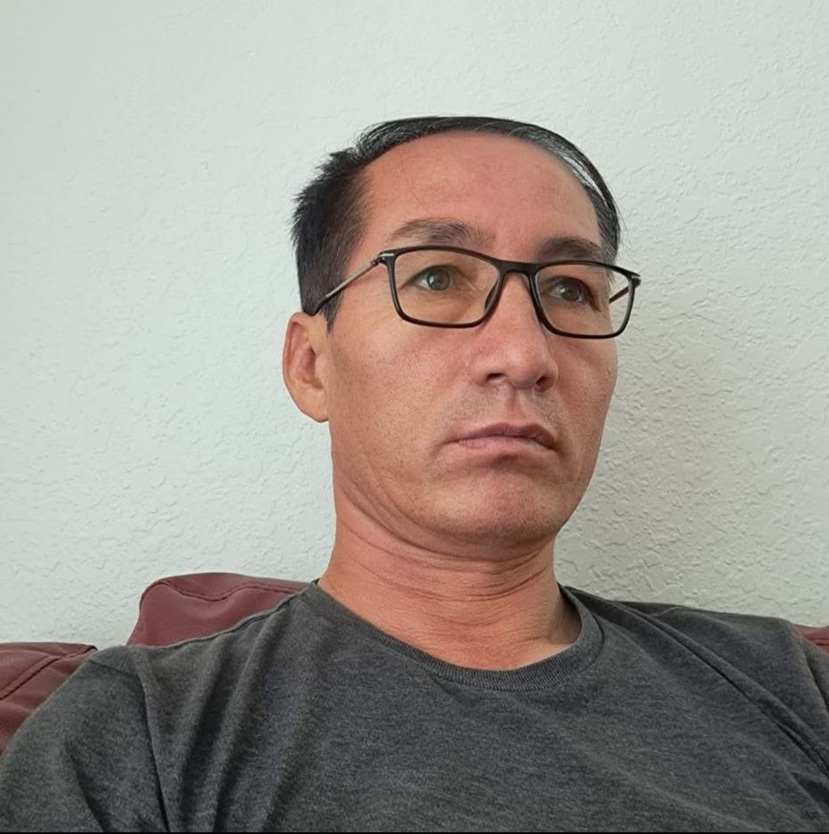
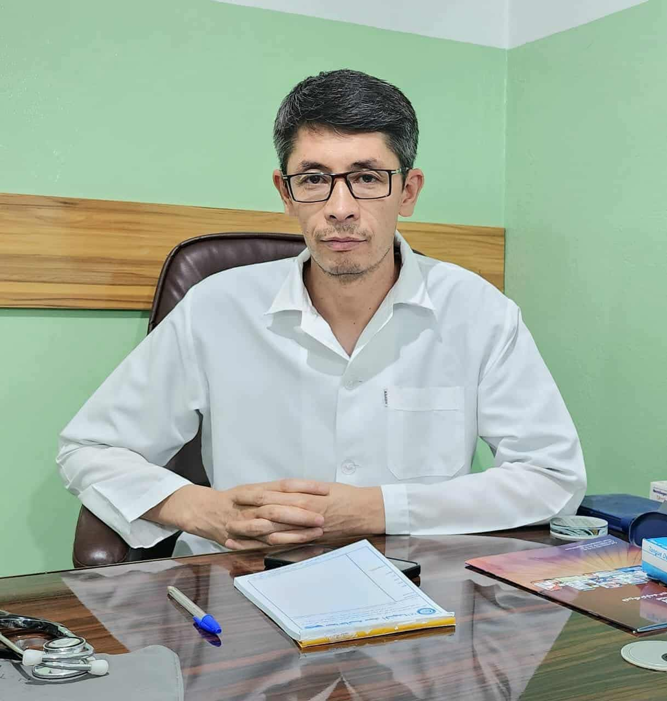

خادم حسین کریمی
روزنامه نگار
برای من در خصوص آدمها، سبک و کیفیت زندگی، از هر چیزی
تحسینبرانگیزتر است. انجنیر امینی، یکی از همان آدمهاست. در قالب
یک احساس شخصی، آرزو میکنم بتوانم به کیفیت زندگی او، زندگی کنم
که بسیار دشوار است. یک معلم با دستاوردهای پربار، پدری فداکار
برای فرزنداناش و شوهری مهربان و خوشقلب برای همسرش. یک معلم
موفق، فراتر از جزوهها و مضمونهایی که آموزش میدهد، از نظر شیوه
و سبک زیستن هم برای شاگرداناش الگو میشود. بزرگترین معلمان، در
واقع به شاگرداناش هنر و کیفیت زندگیکردن را میآموزاند. زندگی
پربار او حقیقتا مایه تحسین و حسرت من است. یادش گرامی باد.
اسحق وکیلی
مدیر سرشماری در سازمان بین المللی مهاجرت
در روزگاری که چراغ دانش در میان غبار جنگ و جهل رو به خاموشی
میرفت، او ایستاد؛ چون شمعی در تاریکی، سوزان، اما روشنگر. امینی
تنها معلم نبود؛ او الگوی یک نسل بود. با قلبی سرشار از عشق به وطن
و ایمانی عمیق به رسالت معلمی، در روزگاری که کمتر کسی به آموزش و
پرورش اهمیت میداد، او با دستهای خسته ولی دل روشن، آیندهای را
بنا نهاد که امروز ما در سایه آن نفس میکشیم. او مردی نیکسیرت،
متواضع، خوشرفتار و عالمانه بود؛ از آندست معلمانی که نه تنها
دانش میآموزند، بلکه انسان میسازند. شاگردانش را چون فرزندان خود
دوست میداشت و برای آنان چیزی جز علم، ادب، کرامت و تعهد
نمیخواست.
لیاقت علی زاهدی
متخصص داخله اطفال
انجینر حسین علی امینی، معلم گرانقدر ما، چند روز پیش به رحمت حق
پیوست. یاد و خاطره اش تا همیشه در دل هایمان زنده خواهد ماند. او
معلمی بود از جنس عشق و ایثار که عمر خویشرا در راه تعلیم و تربیت
نسل آینده وقف کرد. اشتیاق بی پایانش برای آموزش، الهام بخش
شاگردان بی شماری بود. با حلم و اخلاق والا، دل های بسیاری را
تسخیر کرد. او فقط معلم نبود، مربی، راهنما و الگوی تمام عیار برای
ما بود.باصبر مثال زدنی اش، هرمفهومی را با روشنایی علم به ذهن ما
منتقل می کرد. ایمان عمیقش به رسالت معلمی، از او شخصیت بی نظیر
ساخته بود. او باور داشت که هر دانش آموز توان درخشیدن دارد، اگر
کسی چراغ راهش شود. و خودش آن چراغ بود. یادش گرامی، راهش پر رهرو
و نامش ماندگار باد.
محمد باقر "ناصری"
مدیر پروژه باغ صلح و امید در موُسسه گلوبل هوپ
سعدیا مرد نیکونام نمیرد هرگز
مرده آن است که نامش به نیکوی نبرند
به روح بلند استاد عزیز ما درود می فرستم
استاد امینی مرحوم شخصیت مهربان و خدمتگزار بود، توانمندی و تدریس شیوا که در علوم ساینسی داشت مایه افتخار و سربلندی نسل و دیار ما بود.
پوهنمل خادم حسین همدم
استاد اسبق فاکولته زراعت٫ دانشگاه کابل
بعض انسانها در زندگی اش حامی و ناجی همنوعان خویش و عامل تحول شگرف در انسان یا انسان های دیگری میشوند، آنها بی تردید در جمع مقربان و اولیای الهی هستند.
استاد بزرگوار مان انجنیر صاحب امینی یکی از آن جمع بود.
من آن بزرگوار را عامل اول شکل گیری نقشه و داشته ی علمی زندگی خویش میدانم. او ناگفته٫ دستان ناتوان من و ده ها همچو من را گرفت، بما امید حرکت بخشید و با پشتاره ی از اندوخته ها، از مرز آزمون کانکور عبور مان داد.
من عمده ی از داشته های علمی ام را مرهون فداکاری های آن عزیز سفر کرده می شمارم
روح بزرگ اش شاد و یاد اش در دلهای مان گرم باد!
سخی فروزش
کارمند سابق سازمان ملل متحد و کارمند فعلی اداره سیزاک CISOC در کانادا
استاد امینی همواره با شور و عشق تمام، به دانش اموزان کمک میکرد و وقت خود را صرف آموزش و هدایت آنان مینمود. این روحیه الهامبخش و انرژی مثبت او باعث میشد تا محیط آموزشی مملو از امید و خلاقیت باشد.
استاد امینی در کنار ظرفیت علمی و توانایی های هنری اش، یک شخصیت متواضع و خاکی داشت. همیشه به این موضوع فکر می کنم که چگونه انرژی پایان ناپذیری داشت که ساعت ها کنارتخته می ایستاد وبا حوصله مندی تا آخرین سوال را پاسخ می داد. روان استاد فرزانه ما شاد ویادش گرامی باد.

انجنیر ضیا حسینی
آمریکا ، ۱۸ سرطان
انجنیر امینی استاد متین، دلسوز و زحمتکشی بود
که با قلب پاک و حسن نیت، با مهربانی و روشنگری سالیانی از عمر بابرکتش را در راه پرورش شاگردان لیسه استاد شریفی و بی بی زهرا حوتقول مخلصانه صرف کرد و چراغ راهنما برای هزاران فرزند قریه و ده اش شد.
استاد امینی برای من الگوی قناعت، سختکوشی و متانت بود و همیشه هم خواهد ماند، روحش شاد و یادش گرامی باد.
بسمالله رویان
مدیر شرکت ساختمانی Skill CPG Pty Ltd
انجنیر حسین علی امینی به عنوان یکی از چهره های باشکوه و ماندگار از شخصیت های علمی و کادر مسلکی در زهن و قلب مردم معارف دوست سرزمین ما خواهد زیست.
او با تباشر و قلم اش در قالب معادلات مغلق ساینس چون الجبرا، ریاضی و فزیک، در واقع معادلات مغلق زندگی هزاران دانشجو را ترسیم و با ارآئه پاسخ به مجهولات؛ راه حل ها و مسیر زندگی موفق و آینده روشن را برای نسل دانش آموز به تصویر می کشید.
او نقش یک جنرال متعهد و همیشه بیدار را داشت که در حراست از سنگر ترویج آگاهی و روشنایی لحظه ای غفلت نکرد.
شخصیت فروتن، صبور و آرام استاد امینی جدا از دانش واندوخته های علمی که استاد برای فرزندان هم نسل اش ارایه می نمود، درمیان جامعه ما کاملا نمونه و منحصر به فرد بود که در انتقال دانش ریاضی و ساینسی به شکل استثنایی موثر بود.
دست همه استادان را از راه دور می فشارم. و برای آرامش روح استاد ما دعا می کنیم.
لطیفه الطاف
با عرض سلام و احترام
(استاد امینی مرد آرام، صبور و مهربان بود. در کنار این که ما از او ریاضی را خوب آموختیم، او درس صداقت و از خودگذشتگی را نیز به ما آموزاند. در جریان تحصیل حتی یک مورد خشونت از او ندیدیم، دلسوزی و مهربانی اخلاق همیشگی او بود. یادش گرامی باد)
تشکر از شما که مرا در این یاد بود از استاد عزیز و گرامی شریک دانستید.
با احترام
بشیر یاوری
روزنامهنگار و آمر پیشین لیسه استاد شریفی
عنوان برنامه را چه میگذارید؟
به مراسم فاتحه و یادبود از مرحوم انجنیر حسین علی امینی و استادان درگذشته ی لیسه های عالی استاد شریفی و بی بی زهرا (س) حوتقول خوش آمدید

داکتر رمضان علی یاوری
متخصص امراض گوش،گلو وبینی
و استاد دانشگاه
استاد حسین علی امینی آموزگار صادق و عملگرا بود که فراتر از تدریس به پرورش شخصیت شاگردانش پرداخت
داکتر رمضان علی یاوری
متخصص امراض گوش،گلو وبینی
و استاد دانشگاه
استاد حسین علی امینی آموزگار صادق و عملگرا بود که فراتر از تدریس به پرورش شخصیت شاگردانش پرداخت